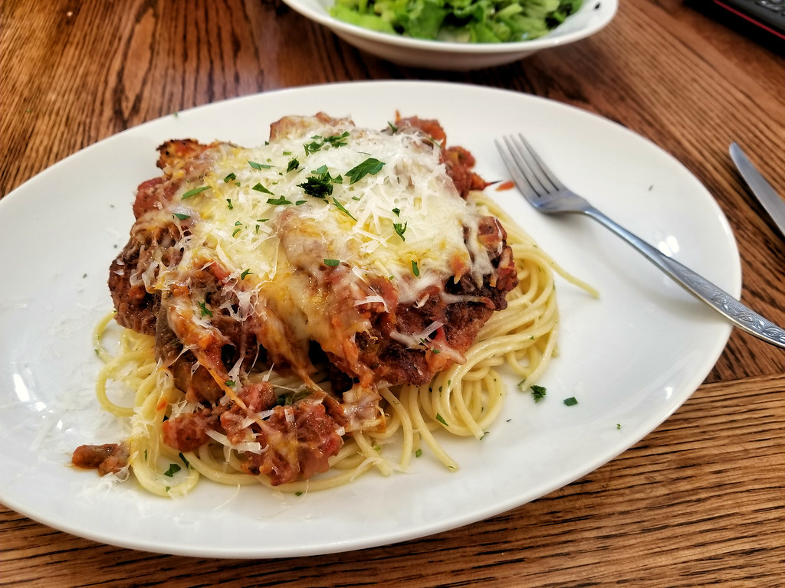

Chicken Parmesan

You have tasted the savory taste of chicken combined with tomato sauce and cheese, nd now you are ready to make your own.
After this recipe you will be able to make your own chicken parmesan!
Olive garden will wish that they hired you to cook instead.
Ingredients
- Chicken
- Bread Crumbs
- Eggs
- Noodles of choice
- Tomato Sauce
- Mozarella
- Seasoning to taste
Steps to make Chicken Parmesan
- Bread Chicken: Put the breadcrumbs in one bowl and egg mixture in the other bowl. Now baste chicken in egg wash then dip in the bread crumbs.
- Fry Chicken: Fry your chicken in medium-high heat or until the oil is bubbling. Cook till the chicken is a crispy brown color.
- Boil Noodles: Boil your noodles as shown by the package instructions.
- Cook Pasta:Combine alittle bit of the pasta water and pasta with tomato sauce until hot
- Plate: Plate pasta and place fried breaded chciken on top and garnish to liking with parsley